Homework 3
Below is a table listing the probabilities of three binary random variables. In the empty table cells, fill in the correct values for each marginal or conditional probability. Round your answers to 3 decimal places.
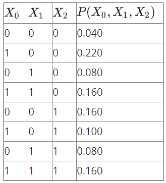
Please answer the following expressions:
You are given several graphical models below, and each graphical model is associated with an independence (or conditional independence) assertion. Please specify if the assertion is true or false.
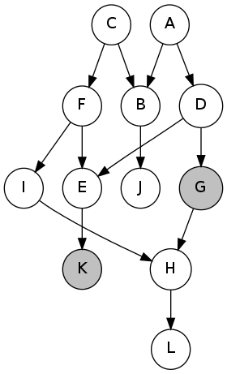
Assertion: It is guaranteed that A is independent of L given G, K.
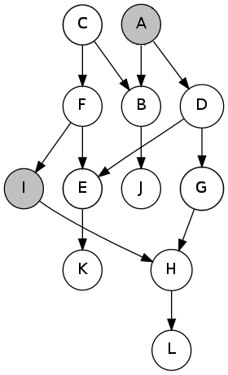
Assertion: It is guaranteed that C is independent of H given A, I.
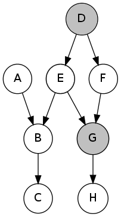
Assertion: It is guaranteed that C is independent of F given D, G.
Given the factors and
and
which factor will be created after joining on
and summing out over
?
Given the factors and
, what is the resulting factor after joining over
?
For four random variables, there exists a Markov Network to represent it as:
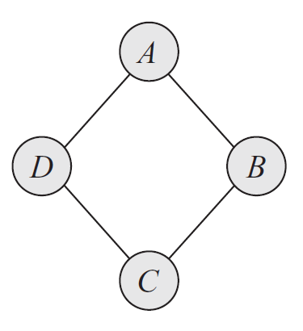
Please choose the Bayesian Network that can precisely (no more, no less) represent the distribution of this Markov Network from the two models:
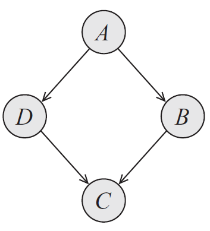
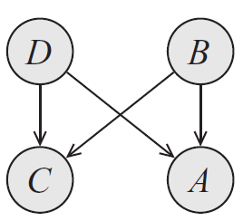
Assume the following Bayes Net and corresponding CPTs. In this exercise, we are given the query , and we will complete the tables for each factor generated during the elimination process.
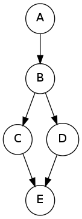
After introducing evidence, we have the following probability tables.
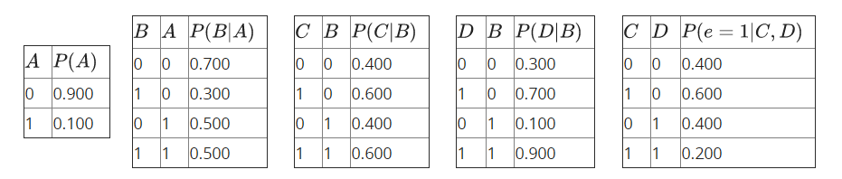
Three steps are required for elimination, with the resulting factors listed below:
- Eliminate
. We get the factor
.
- Eliminate
. We get the factor
.
- Eliminate
. We get the factor
.
Complete the tables below for the factors generated during elimination. Some values have been evaluated for you, note that these values are precise and feel free to use them. You should also fill precise values in the blanks, and round to a fixed number of decimal places (the same or potentially more digits than actually required and have trailing zeros).
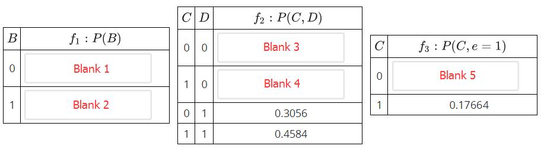
We will work with a Bayes' net of the following structure.
In this question, we will perform rejection sampling to estimate . Perform one round of rejection sampling, using the random samples given in the table below.
Variables are sampled in the order A, B, C, D, E. In the boxes below, choose the value (0 or 1) that each variable gets assigned to.
Note that the sampling attempt should stop as soon as you discover that the sample will be rejected. In that case, mark the assignment of that variable and leave the boxes corresponding to the rest of the variables blank.
To generate random samples, use as many values as needed from the table below, which we generated independently and uniformly at random from 0 to 1. Use numbers from left to right. To sample a binary variable with probability
, select a value
from the table, and choose
if
and
otherwise.
| 0.426 | 0.348 | 0.584 | 0.913 | 0.637 | 0.885 | 0.479 | 0.670 | 0.402 | 0.882 |
| A | P(A) |
|---|---|
| 0 | 0.3 |
| 1 | 0.7 |
| B | A | P(B|A) |
|---|---|---|
| 0 | 0 | 0.2 |
| 1 | 0 | 0.8 |
| 0 | 1 | 0.4 |
| 1 | 1 | 0.6 |
| C | B | P(C|B) |
| 0 | 0 | 0.5 |
| 1 | 0 | 0.5 |
| 0 | 1 | 0.1 |
| 1 | 1 | 0.9 |
| D | B | P(D|B) |
| 0 | 0 | 0.6 |
| 1 | 0 | 0.4 |
| 0 | 1 | 0.3 |
| 1 | 1 | 0.7 |
| E | C | D | P(E|C,D) |
| 0 | 0 | 0 | 0.7 |
| 1 | 0 | 0 | 0.3 |
| 0 | 1 | 0 | 0.6 |
| 1 | 1 | 0 | 0.4 |
| 0 | 0 | 1 | 0.5 |
| 1 | 0 | 1 | 0.5 |
| 0 | 1 | 1 | 0.9 |
| 1 | 1 | 1 | 0.1 |
Enter either a 0 or 1 for each variable that you assign a value to. Upon rejecting a sample, enter its assigned value, and leave the fields for the remaining variables blank. For example, if C gets rejected, do not fill in any values for D and E.
Below are a set of samples obtained by running rejection sampling for the Bayes' net from the previous question. Use them to estimate and round to 3 decimal places. If the estimation cannot be made, input -1.
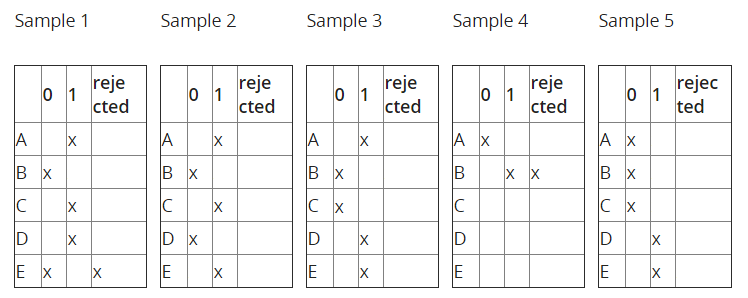
We will work with a Bayes' net of the following structure.
In this question, we will perform likelihood weighting to estimate . Generate a sample and its weight, using the random samples given in the table below.
Variables are sampled in the order A, B, C, D, E. In the table below, select the assignments to the variables you sampled.
To generate random samples, use as many values as needed from the table below, which we generated independently and uniformly at random from 0 to 1. Use numbers from left to right. To sample a binary variable with probability
, select a value
from the table, and choose
if
and
otherwise.
| 0.123 | 0.822 | 0.170 | 0.626 | 0.593 | 0.261 | 0.558 | 0.064 | 0.796 | 0.178 |
| A | P(A) |
| 0 | 0.3 |
| 1 | 0.7 |
| B | A | P(B|A) |
| 0 | 0 | 0.2 |
| 1 | 0 | 0.8 |
| 0 | 1 | 0.4 |
| 1 | 1 | 0.6 |
| C | B | P(C|B) |
| 0 | 0 | 0.5 |
| 1 | 0 | 0.5 |
| 0 | 1 | 0.1 |
| 1 | 1 | 0.9 |
| D | B | P(D|B) |
| 0 | 0 | 0.6 |
| 1 | 0 | 0.4 |
| 0 | 1 | 0.3 |
| 1 | 1 | 0.7 |
| E | C | D | P(E|C,D) |
| 0 | 0 | 0 | 0.7 |
| 1 | 0 | 0 | 0.3 |
| 0 | 1 | 0 | 0.6 |
| 1 | 1 | 0 | 0.4 |
| 0 | 0 | 1 | 0.5 |
| 1 | 0 | 1 | 0.5 |
| 0 | 1 | 1 | 0.9 |
| 1 | 1 | 1 | 0.1 |
Enter either a 0 or 1 for each variable assigned by a pass of likelihood weighting with the generated samples above.
Below are a set of weighted samples obtained by running likelihood weighting for the Bayes' net from the previous question. Use them to estimate Round your answer to 3 decimal places. Input -1 in the box below if the estimation cannot be made.
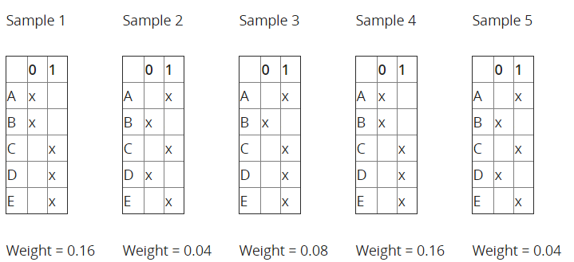